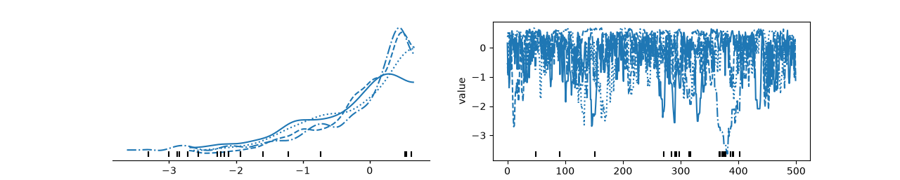

Can I trust the draws?#
Some answers come from draws of the posterior, and a run has only so many. Where fips cannot write the posterior down (a nonlinear forward model, a bound on the state, priors on the hyperparameters), it draws from the posterior with a Markov chain, and the mean, the standard deviations and the intervals it reports are those of the draws. They are exact in the limit of many draws; a run has a few thousand, from chains that each start somewhere and move a little at each step. The checks say whether these draws are enough: the same checks a PyMC or Stan user reads after a run, and warnings at cutoffs measured on fips’s own sampler. Checks catch most runs that are off, not every one: the last two sections say what they cannot see, and how fips’s sampler is tested against answers it did not compute.
Which answers are draws#
Method |
Its answer |
What to check |
|---|---|---|
|
The closed-form posterior ( |
No draws to check (A problem too large to factor: the variational method for its convergence). |
|
An update of members drawn from the prior: a sample, but not a chain. |
Its error falls as one over the root of the members (A model without a Jacobian: the ensemble method). |
|
One chain of exact draws of the truncated posterior (or independent rectified draws). |
The warnings, and |
|
Four chains of Hamiltonian Monte Carlo, from the mode. |
Everything on this page. |
Four Metropolis chains of the hyperparameters, and a draw of the state at each step. |
Its warnings, |
post.estimate is not a draw: for "gauss_newton" and "bounded" it
is the mode, found by optimization. post.mean, post.variances,
cov(), uncertainty() and
trials() are read from the draws.
Read them in this order#
The warnings. A solve, and reading an answer from it, warns when a check fails at fips’s cutoffs (The warnings). Read every one.
The table.
diagnostics()gives each element’s R-hat, effective number of draws and Monte Carlo errors (The table). Read it for the elements you report, even with no warning.The totals you report.
diagnostics(W)gives the same for the rows of an aggregation (Totals). A total can be right where its elements are not.The chains.
chains()andto_inference_data()show the draws themselves, for ArviZ’s plots (Looking at the chains).What none of these see (What the checks cannot see): every chain missing the same part of the posterior, a second mode, a wrong model.
An example#
Two values whose total is observed, \(a + b = 2\) to within 0.05, each with a lognormal prior of mean 1 (Values that stay positive). Any pair on the curve \(e^{u_a} + e^{u_b} = 2\) fits, so the posterior is a thin arc in \((u_a, u_b)\), and the chains must travel along it to its ends, where one value is near 2 and the other near 0. Two dimensions are few enough for a grid, so the right answer is known:
In [1]: import numpy as np
In [2]: import pandas as pd
In [3]: import fips
In [4]: state = fips.Space({"value": pd.Index(["a", "b"], name="element")})
In [5]: total = fips.Space({"total": pd.RangeIndex(1, name="obs_id")})
In [6]: model = fips.LogNormalForward(fips.Operator(np.ones((1, 2)), total, state), 1.0)
In [7]: u_0, sigma = model.prior_for(1.0, np.sqrt(np.e - 1.0))
In [8]: problem = fips.Problem(
...: prior=u_0,
...: prior_cov=fips.Covariance.diagonal(sigma.values**2, state),
...: obs=fips.Vector([2.0], total),
...: obs_cov=fips.Covariance.diagonal(0.05**2, total),
...: forward=model,
...: )
...:
In [9]: grid = np.linspace(-8.0, 3.0, 1601)
In [10]: u_a, u_b = np.meshgrid(grid, grid, indexing="ij")
In [11]: log_p = (
....: -0.5 * ((u_a - u_0.values[0]) / sigma.values[0]) ** 2
....: - 0.5 * ((u_b - u_0.values[1]) / sigma.values[1]) ** 2
....: - 0.5 * ((np.exp(u_a) + np.exp(u_b) - 2.0) / 0.05) ** 2
....: )
....:
In [12]: p = np.exp(log_p - log_p.max())
In [13]: p /= p.sum()
In [14]: mean_a = (p * u_a).sum()
In [15]: np.sqrt((p * (u_a - mean_a) ** 2).sum()) # the standard deviation of u_a
Out[15]: np.float64(0.7557902502784922)
A solve at the default 2000 draws:
In [16]: post = fips.solve(problem, "gauss_newton", seed=2)
In [17]: post.diagnostics().round(3)
Out[17]:
mean sd mcse_mean mcse_sd ess_bulk ess_tail r_hat
block element
value a -0.231 0.789 0.075 0.076 131.305 115.571 1.026
b -0.204 0.721 0.056 0.043 131.972 169.687 1.027
The two R-hats are above Stan’s 1.01, and the effective draws in the bulk
are near a hundred of the 2000. The solve did not warn: fips warns of an
element’s R-hat above 1.05, a cutoff measured on its own sampler (The
warnings). This is the usual case for these two values at the default
draws: over eight seeds (2026-11-24) the R-hats were 1.006 to 1.036, the
effective draws 110 to 500, and the standard deviations 9% below to 14%
above the grid’s, with no warning from the solve. An R-hat between 1.01 and 1.05 says the
chains have not yet agreed to within their own scatter; the standard
deviations are good to about a tenth. The tails are thinner still:
ess_tail is under 100 a chain, so reading an interval warns, in your
session, that its ends come from too few draws:
In [18]: post.uncertainty().round(3)
Out[18]:
estimate prior_std posterior_std reduction lower upper
block element
value a -0.001 1.0 0.789 0.211 -2.235 0.614
b -0.001 1.0 0.721 0.279 -1.947 0.633
If that is not good enough, raise draws:
In [19]: more = fips.solve(problem, "gauss_newton", seed=2, draws=10_000)
In [20]: more.diagnostics().round(3)
Out[20]:
mean sd mcse_mean mcse_sd ess_bulk ess_tail r_hat
block element
value a -0.223 0.771 0.033 0.034 569.499 655.149 1.004
b -0.222 0.767 0.031 0.028 588.639 730.008 1.005
Over the same eight seeds, 10,000 draws gave R-hats of 1.003 to 1.02 and
standard deviations within 7% of the grid’s. The Monte Carlo errors fall as
one over the root of the draws, so a fifth of the error costs 25 times the
draws: raise draws until the error is small against what you need, not
until it is zero.
The warnings#
Each warning is a FipsWarning, which Python shows without any
setup, and is also logged (Repeated inversions, logging and saving). A warning names the
worst element or row, and says how many draws would do where it can tell.
Warning |
What it means |
What to do |
|---|---|---|
The chains disagree ( |
One chain stayed out of a part of the posterior that another reached: those elements’ spreads are not yet the posterior’s. |
Raise |
The chains disagree on a total (reading
|
The total you are reading is not settled. |
Raise |
Too few draws in the tails (reading an interval: fewer than 100 effective draws a chain in the tails up to a 95% interval, more for a wider one so each end stays as accurate, for any total or 5% of the elements) |
An interval’s ends are the 5% and 95% quantiles of the draws, and few draws are out there. |
Raise |
The kept draws mix slowly ( |
The draws are too few for the spread to be known to a tenth. |
Raise |
The starts ended at different modes ( |
Gauss-Newton from draws of the prior found another mode. The draws stay near the lowest one. |
More observations or a narrower prior can rule the others out (What the checks cannot see). |
The sampler takes 200 or more steps a draw ( |
The posterior bends very much over its spread, or the Jacobian is not the model’s derivative. |
Check the Jacobian with |
The hyperparameters’ chains disagree ( |
The chains have not agreed on the hyperparameters, so neither have the state’s draws made at them. |
Raise |
Why fips’s cutoffs are not Stan’s. Stan warns of an R-hat above 1.01 and of under 100 effective draws a chain, for every parameter. With hundreds of elements, a few mix slowly at the default draws in nearly every solve, while their totals are right, so an element warns at 1.05 and only when 5% of them do (400 elements, 2026-11-12); a total, which is what a user reports, warns at 1.1, a cutoff that caught every total more than 20% off in 736 solves of 23 problems (2026-11-14). Fewer elements above 1.05 are logged at the INFO level, as are divergences (below).
The table#
diagnostics() gives one row per element, as ArviZ’s
summary computes it (Vehtari et al., 2021):
Column |
What it is |
A bad value |
|---|---|---|
|
The draws’ mean and standard deviation: what the posterior reports. |
|
|
Their Monte Carlo errors: how much another run would move them. They fall as one over the root of the draws. |
|
|
The number of independent draws the chain’s draws are worth, for the mean and the spread. |
Under 100 a chain (400 for four): the chains move slowly there. |
|
The same for the 5% and 95% quantiles, which an interval’s ends are. |
Under 100 a chain: an interval read from the draws warns. |
|
The rank-normalized split R-hat: the chains (and each chain’s halves) compared, in location and spread. Near 1 when they draw the same distribution; NaN with one chain. |
Above 1.01 (Stan’s cutoff): the chains do not yet agree. fips warns above 1.05 (The warnings). |
Effective draws well below the number of draws mean the chain moves slowly
there; more draws fix it, at a cost in proportion. The R-hat is the one check
of several chains against each other: the draws of "bounded", from one
chain, have none.
Totals#
Check the totals you report, not only the elements. A total depends on
how the elements vary together: where the observations see only a sum, the
elements wander along the curve while their total holds still, so a total’s
chains can agree where its elements’ do not. post.diagnostics(W) checks
the rows of an aggregation \(W\) (Reading the posterior), and reading a total
with cov(), uncertainty() or
trials() checks it and warns. In the 736 solves above,
every total more than 20% off had an R-hat above 1.1.
For LogNormalForward and SoftplusForward, the
state is the transformed one, \(u\), and \(W\) sums \(u\), not the
values: a total of the values is the total of each draw’s values, read from
the draws (Reading a transformed state).
Looking at the chains#
chains() gives the kept draws, one column each,
labeled (chain, draw), and sample_stats the
sampler’s record of the path that made each draw, by ArviZ’s names. A path
that diverged (its energy rose by more than 1000, Stan’s rule, or the model
failed along it) is rejected, so the draws stay exact, but it marks where the
sampler could not follow the posterior:
In [21]: post.sample_stats.groupby(level="chain")[["diverging", "acceptance_rate", "n_steps"]].mean()
Out[21]:
diverging acceptance_rate n_steps
chain
0 0.008 0.924401 27.0
1 0.000 0.927752 27.0
2 0.000 0.944992 30.0
3 0.032 0.852050 24.0
Stan warns of any divergence. For fips’s sampler they did not mark the solves that were off (over 90 default solves of 23 problems, 2026-11-16, a fifth had one, none of them off), so the solve logs them at the INFO level: they show where the posterior bends most, not that the answer is wrong.
ArviZ. to_inference_data() hands the draws and the
record to ArviZ (1.1 or later, which needs Python 3.12:
pip install "fips[arviz]") as it reads a PyMC or Stan run, so its plots
work as they do there. A trace plot draws each chain’s density (left) and its
path (right), with the divergent draws marked:
In [22]: import arviz_plots
In [23]: data = post.to_inference_data()
In [24]: arviz_plots.plot_trace_dist(data, coords={"element": ["a"]});


The chains’ densities differ most near the arc’s upper end,
\(u_a\) near \(\log 2\) (where \(b\) is near 0), and the
divergent draws (the ticks) sit towards both ends, where the arc bends most:
the parts of the posterior the chains reach least often. ArviZ’s
summary gives the table above (A nonlinear forward model shows how to make its
ess_tail match fips’s).
What the checks cannot see#
Every check compares the draws with each other. None can see a part of the posterior that no chain reached:
A far, thin arm that every chain misses. In the ten-element softplus problem of fips’s reference suite, element 0’s posterior has a thin arm, towards a value near zero, which a run visits rarely. Single default solves gave its standard deviation 25% to 45% below the references’ in 9 of 16 solves, 6 of them with no warning; its 90% interval was right. When an element’s own spread matters, raise
draws, and compare with another estimate where you can (a grid, for a few elements; another sampler on the same log density).A second mode. Every chain starts from draws of one Gaussian at the mode, so chains that agree cannot show another mode.
"gauss_newton"runs Gauss-Newton from three draws of the prior as well as its mean (starts) and warns when they end at different modes; more starts look further.A wrong model, prior or error covariance. The draws are of the posterior the problem states. Whether that posterior is right is a question for the data: Synthetic experiments tests an inversion where the truth is known, and
chi2_tests()tests the covariances against the data.
Calls to sample() continue the chains from where their
burn-ins ended, so draws from two calls are not independent runs. To compare
runs, solve again with another seed.
How fips’s sampler is tested#
Beside the tests of its code, fips’s sampler is held to answers fips did not
compute: a reference suite of problems from two elements to 900, both
transforms, each solved by default solves with their own seeds and compared,
statistic by statistic, with a grid or with long runs of other samplers
(emcee and nutpie), plus simulation-based calibration (Talts et al., 2018).
A solve’s standard deviation is off where it differs from the reference’s
by more than 10% (or an interval’s end by more than 10% of its width); a
solve misses where a total is off or more than 5% of the elements are, and
a miss with no warning is the failure the suite looks for. The suite is in
tests/reference (its README says how to run it); the table from fips’s
main branch on 2026-11-21, by group:
Problems (reference) |
Elements off |
Totals off (worst) |
Misses with no warning |
|---|---|---|---|
Two elements on a curve, 2000 draws (grid) |
4 of 32 |
0 of 16 (5%) |
0 of 4 |
The same, 20,000 draws (grid) |
0 of 24 |
0 of 12 (1%) |
0 |
Ten elements, mildly nonlinear (emcee, nutpie) |
0 of 320 |
0 of 32 (5%) |
0 |
Ten elements, strongly nonlinear (nutpie) |
5 of 304 |
0 of 32 (5%) |
4 of 5 |
100 to 900 elements, 10 settings (nutpie) |
18 of 17,492 |
0 of 240 (9%) |
0 |
In calibration (1000 worlds of each ten-element problem, 400 of each 100-element one), no element’s or total’s ranks were rejected as non-uniform.
What the table says. Totals were within 9% of the references in every
solve. Single elements were off where they lie along a curve the data do not
fix: at the default draws, in a few of the two-element solves (each of them
warned, and none at 20,000 draws) and in the strongly nonlinear problems,
mostly with no warning (the thin arms above). Report totals where you can,
and raise draws for an element’s spread.
References#
Talts, S., Betancourt, M., Simpson, D., Vehtari, A., and Gelman, A. (2018). Validating Bayesian inference algorithms with simulation-based calibration. arXiv:1804.06788.
Vehtari, A., Gelman, A., Simpson, D., Carpenter, B., and Bürkner, P.-C. (2021). Rank-normalization, folding, and localization: an improved R-hat for assessing convergence of MCMC. Bayesian Analysis, 16(2), 667-718. https://doi.org/10.1214/20-BA1221